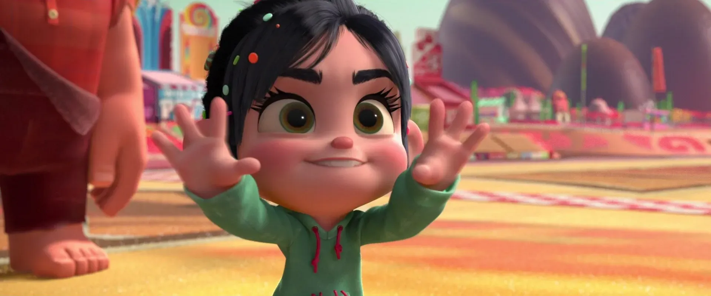

Dobladas de Lengua: El Cine y el Idioma
¿Discutes con tus amigos porque quieres ver la peli en inglés pero ellos dicen que no alcanzan a (o no tienen ganas de) leer los subtítulos?

Podría parecer una discusión superflua. “¡Qué más da!” “La historia es la misma.” “La quieres ver en inglés nomás para presumir.” Y del otro lado: “Es que se pierde la esencia.” “El doblaje es muy malo.” “La traducción es incorrecta.” Quizá en realidad no importe, que sea cuestión de mera preferencia y que la discusión sólo sirva para perder tiempo antes de comprar los boletos y al final mejor ir por unas burgers el sábado por la tarde. ¿Quién tiene la razón? No es tan simple.
El doblaje existe por una razón justa y noble: accesibilidad. De la misma forma en que no todos pueden usar escaleras, no todos pueden experimentar el cine en idioma distinto al propio. Problemas de vista, falta de comprensión lectora, la imposibilidad de poner atención al texto e imagen al mismo tiempo, y, por supuesto, el desconocimiento de un idioma extranjero, son razones para justificar las versiones dobladas al español. Es preferible tener acceso facilitado al cine como forma artística que demandarle a la audiencia que aprenda inglés o francés, o que se paguen la consulta con el oculista.
Sin embargo, hay un precio que pagar por esa accesibilidad: No vemos la misma película cuando está doblada a otro idioma. Cada película está hecha de diversos elementos que trabajan en conjunto (así se supone que debe ser) para darnos un sólo objeto artístico, un engranaje calculado para funcionar en armonía; si uno de esos elementos se altera, también se altera lo que experimentamos como audiencia. En los mejores casos el doblaje será de calidad comparable con la banda sonora original y aún así perderíamos lo que el director y actores originales quisieron transmitir cuando rodaron el filme.
El aspecto más comprometido en una versión doblada es el ritmo cinematográfico. Una buena película calcula meticulosamente el tiempo de sus planos y secuencias y su ritmo debe ser consistente con el diálogo de los personajes. Recientemente fui a ver Ant-Man and the Wasp como invitado a una tarde familiar, y como me pagaron el boleto, no objeté mucho que la función fuera en español. A pesar de que disfruté la proyección (la peli está bonita) y su doblaje no es la peor basura, el ritmo de los diálogos estaba desfasado de la acción en pantalla, problema particularmente grave en una comedia como esta peli en la que un elemento crucial del humor, el llamado timing, está fuera de ritmo. La entonación de las frases no coincidía con los gestos faciales y la cadencia de las conversaciones se sentía artificial, forzada. Si bien no todas las películas recargan su ritmo en los diálogos, algunos de los mejores filmes de la historia tienen fama precisamente porque el director organiza los diálogos como a instrumentos en una orquesta; sólo vean la versión no doblada de All about Eve (La malvada, o Eva al desnudo, 1950) para un ejemplo de cómo los diálogos pueden sonar como música por sí mismos.
“¿Pero quién se fija en fija en eso? No quiero hacer un ensayo sobre la métrica del cine angloparlante, ¡yo sólo quiero ver la maldita película!”
Y… sí, habrá personas que sólo quieran ver de qué va la historia y los efectos especiales. ¡Y no hay problema! Cada quién puede decidir lo que le guste.

Pero habría que notar que el ritmo cinematográfico no es sólo un aspecto técnico que nadie más que los más nerds de los estudiantes de cine van a notar. Es un aspecto básico y natural que, aunque quizá no sea fácil de analizar y señalar sin conocer estos conceptos sí es fácil de percibir.
Muchos terminan odiando una peli que quizá les hubiera encantado si la hubiesen visto con la banda sonora original.
El ritmo no es un elemento artificial, es de los fenómenos más cotidianos. El latido del corazón, la respiración y nuestra manera de caminar son claros ejemplos. El ritmo resulta más natural que la falta de él y cuando el ritmo de una película está desacompasado, resulta poco atractiva, falta de naturalidad y empatía (aunque no falta el director que quiera justamente ese efecto, pregúntenle a David Lynch).
Los cinéfilos también sufrimos. No tengo la menor idea de alemán, pero cuando me topo con una peli alemana, prefiero verla subtitulada a sacrificar lo anterior; no estaría viendo la película por la que pagué. Siempre es preferible ver una película con su banda sonora original, sin doblajes.
Ah… También existen pelis hechas en español. No, claro; a mí también se me olvida a veces. Pueden seguirme en Twitter y leer mis pensamientos en tiempo real: @ismatuits
Ismael Borunda es Maestro en Estudios de Arte y Literatura, profesor de teoría literaria, cinéfilo ávido y videojueguista empedernido. Siempre disponible si hay café de por medio.